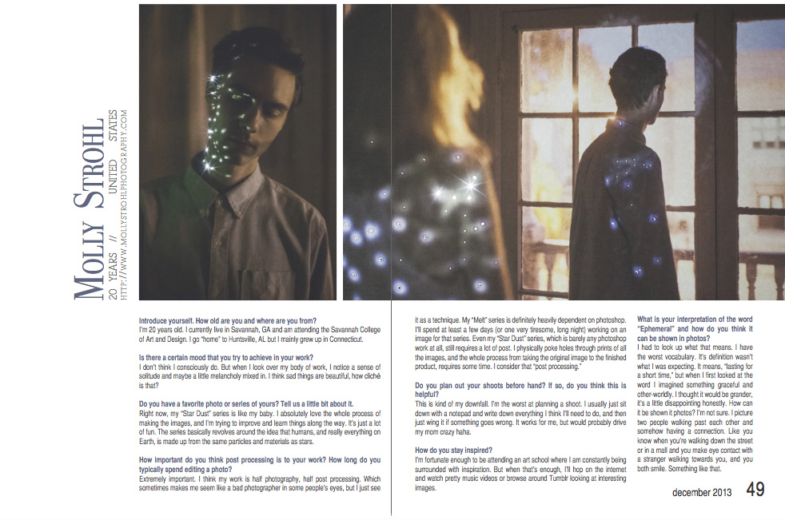
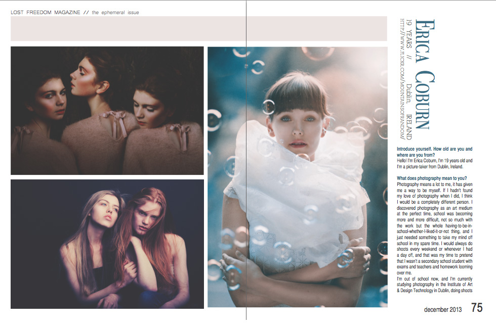
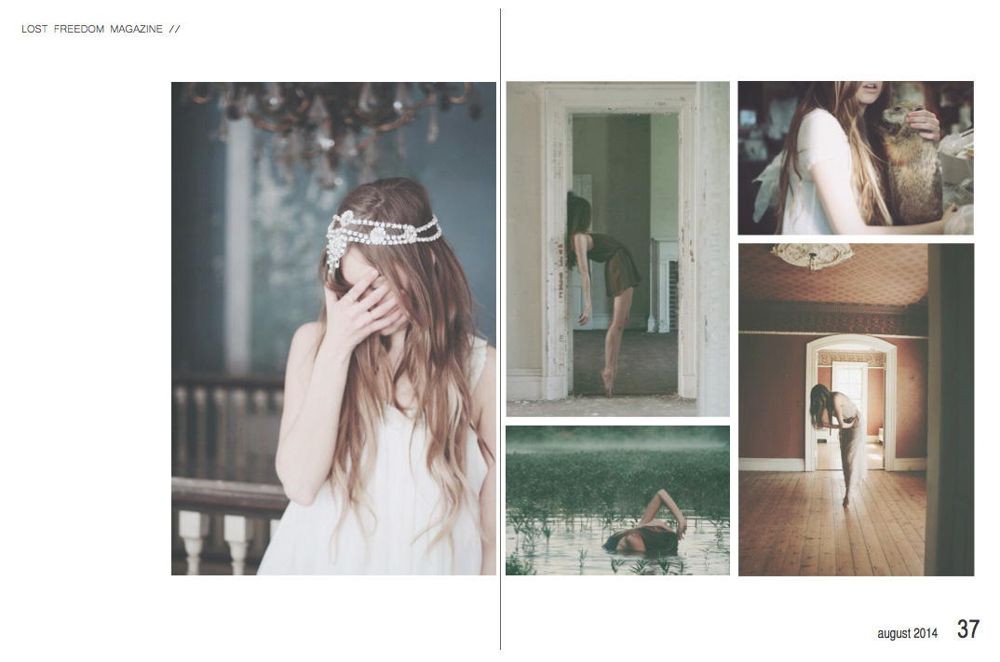
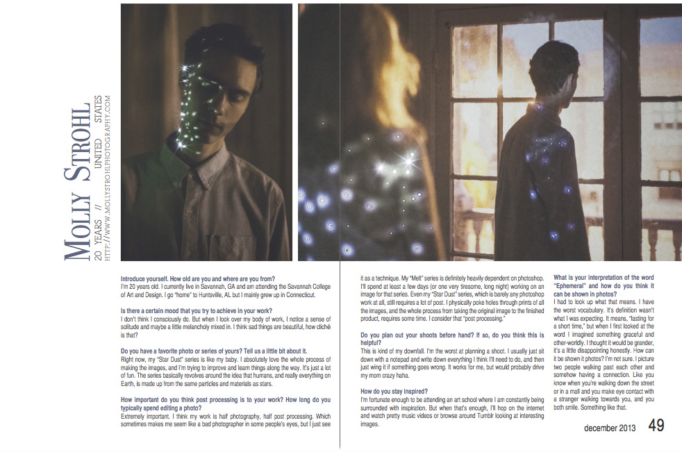
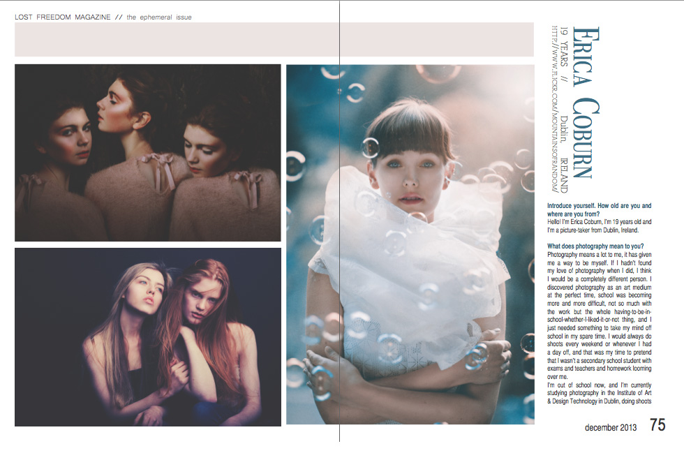
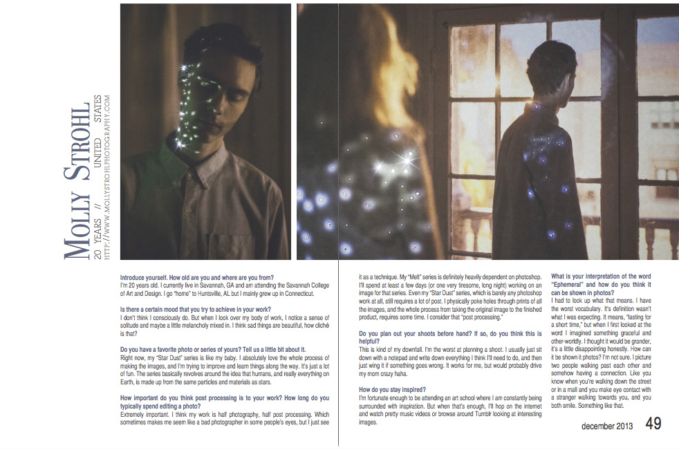
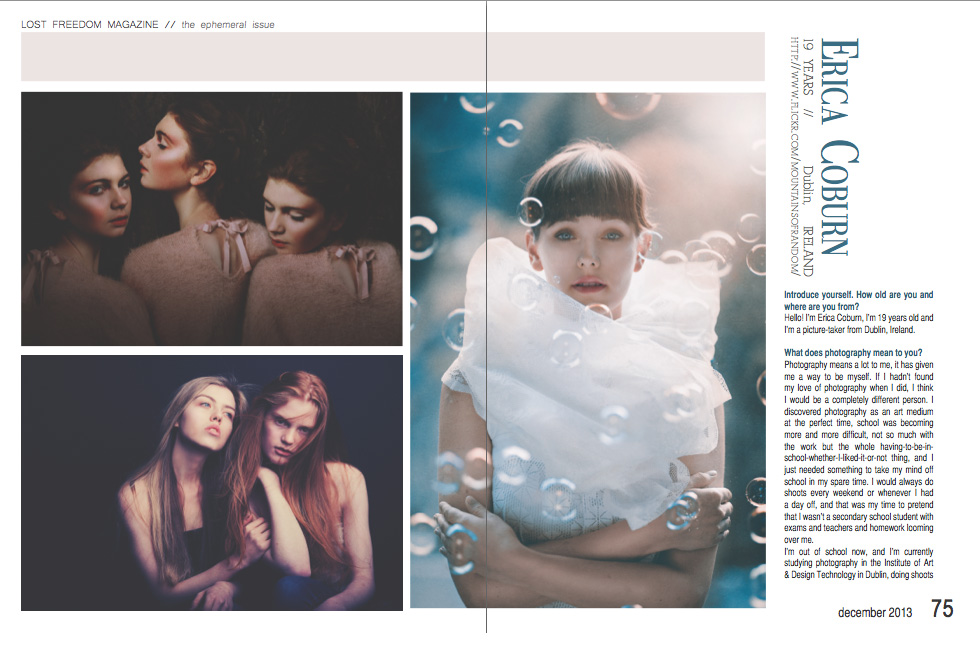
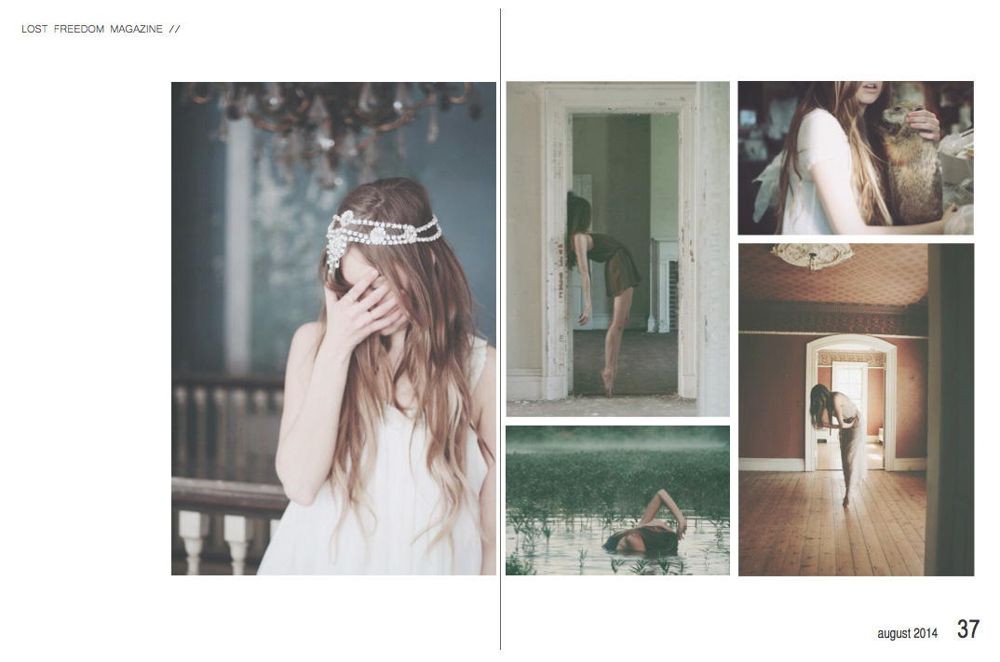
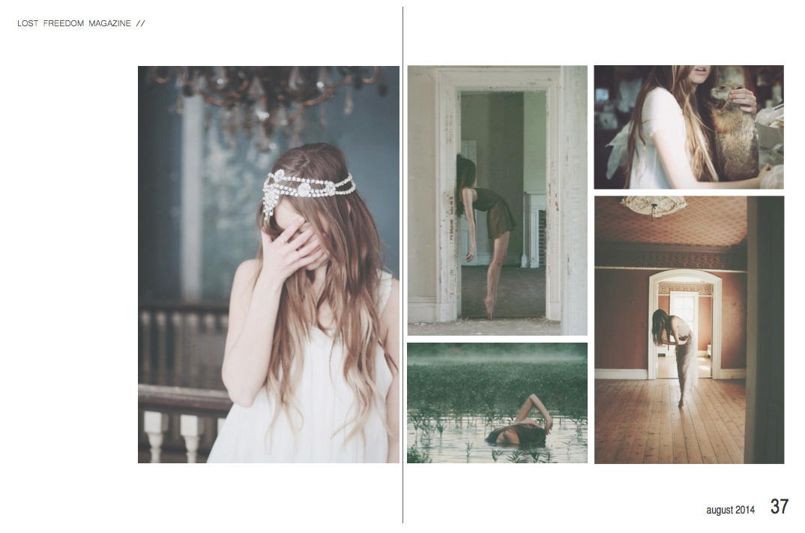

During the summer of 2011, I created an online photo magazine titled Lost Freedom Magazine, featuring the work of many talented young photographers.
Throughout the next three years, I published 20 issues ranging from 100-120 pages each. I was also responsible for the design of each page of the issue as well as managing the Lost Freedom magazine website and social media, primarily Facebook and Flickr to market the magazine.



All issues can be read in full here.


 



 
